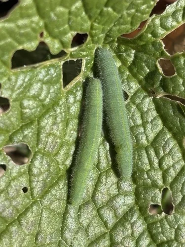

毛毛虫 短足、身体分节的幼虫 这是与该表现相符的一种可能原因，请结合下方特征核对。  参考照片 · Pieris rapae · (c) reagan peschke, some rights reserved (CC BY) · CC-BY · 已缩放并转为 WebP 先看哪里 沿着新鲜咬孔寻找幼虫，检查叶片折叠处和枝条背面。 可能原因与下一步 记录受害范围和虫体特征。少量取食往往不影响健壮植株，观察新叶再决定是否干预。